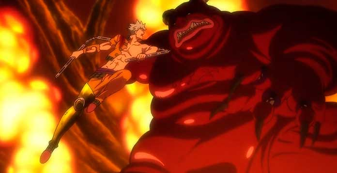

Ban a Raposa da Ganância, de Nanatsu no Taizai
Ban, a Raposa da Ganância, é um dos grandes personagens de Nanatsu no Taizai (“Os Sete Pecados Capitais” no Brasil e The Seven Deadly Sins no Ocidente), obra que foi publicada pela primeira vez em outubro de 2012 e, desde então, conquistou uma legião de fãs ao redor do mundo. Ban é um dos personagens mais populares de Nanatsu no Taizai chegando a ficar em segundo em algumas pesquisas, conquistando a admiração dos fãs por causa de sua coragem e jeito extrovertido. Ele está presente desde os primórdios da história e, sua primeira aparição aconteceu no capítulo 7 do mangá, que foi lançado em novembro de 2012. Já no anime, Ban estreou no episódio 4 da primeira temporada, que foi ao ar em outubro de 2014, e cobriu os capítulo 7, 8 e 9 do mangá.
Pecado da ganância
Ban representa o pecado da Raposa da Ganância, e por isso é um personagem que às vezes age de forma egocêntrica e gananciosa; como quando tentou matar Meliodas. Apesar disso, na maioria das ocasiões, ele se mostra um homem bondoso e de sentimentos nobres, disposto a ajudar aqueles que precisam.
Os outros 6 membros dos Sete Pecados Capitais são:
1. Meliodas, o pecado da Ira do Dragão e líder do grupo
2. Diane, o pecado da Serpente da Inveja
3. King, o pecado do Urso da Preguiça
4. Merlin, o pecado do Javali da Gula
5. Gowther, o pecado da Cabra da Luxúria
6. Escanor, o pecado do Orgulho do Leão
Segundo membro mais novo dos Sete Pecados Capitais
Apesar da aparência jovial, a maioria dos membros dos Sete Pecados Capitais já são bem velhos pelo fato de não serem humanos, e alguns possuem centenas ou até milhares de anos. Ban e Escanor são os únicos humanos do grupo, e por isso possuem idades normais. Escanor é o mais novo dos pecados, com 40 anos; já Ban é o segundo mais novo, e cronologicamente, possui 43, embora sua aparência seja de um homem de vinte e poucos anos, medindo cerca de 2,10m e pesando cerca de 70kg.
Já venceu Meliodas 361 vezes
Meliodas e Ban são grandes amigos e, sempre que possível, adoram medir suas forças em um bom combate. Justamente por isso, já lutaram entre si centenas de vezes. Quando os dois companheiros se encontraram pela primeira vez no anime/mangá de Nanatsu no Taizai depois se vários anos sem se verem, Ban revelou que eles já haviam se enfrentando 720 vezes, e que ele havia se saído vitorioso em 361 desses combates, 2 a mais que Meliodas que não concordou com a afirmação, que venceu 359. (Os dois se enfrentaram em outras ocasiões, porém não falaram sobre como anda a contagem).
É virtualmente imortal
Por causa de ter ingerido a água da Fonte da Juventude quando um Demônio Vermelho atacou a Floresta do Rei das Fadas, o corpo de Ban se tornou imortal, regenerando praticamente qualquer dano sofrido em um curto período de tempo. Porém, apesar de ser virtualmente imortal, isso não significa que o personagem não possa ser derrotado, e, embora seja difícil feri-lo de forma permanente, e mais difícil ainda matá-lo, isso não é impossível. Meliodas conseguiu feri-lo de forma permanente usando as chamas negras que são capazes de matá-lo, causando a cicatriz que ele possui em seu rosto e pescoço; outra forma de matá-lo, é retirando a alma de seu corpo; e além destas, ainda existem outras.
Courechouse
Todos os Sete Pecados Capitais possuem um Tesouro Sagrado, que são armas extremamente poderosas que fazem com que os personagens fiquem ainda mais fortes. O de Ban se chama Courechouse, uma espécie de nunchaku com quatro bastões conectados por correntes. Pouco se sabe sobre as habilidades da Courechouse, já que a arma foi roubada quando o pecado da Raposa da Ganância se deixou ser capturado.
Poderes e Habilidades de Ban

O principal poder de Ban é sua imortalidade, que lhe permite sofrer os mais severos golpes e ferimentos e se regenerar praticamente instantaneamente. Além disso, a Raposa da Ganância também possui outros poderes; entre eles:
. Resistência sobre-humana
. Força sobre-humana
. Velocidade sobre-humana
. Agilidade sobre-humana; entre outros
Já a principal habilidade do personagem é conhecida como arrebatar, e ela basicamente permite que ele roube objetos físicos ou a habilidade de outros seres enfraquecendo-os enquanto ele fica mais forte, porém existe um limite de força que ele pode roubar sem que seu corpo seja prejudicado. Ban consegue ainda “roubar” partes do corpo dos outros antes que eles sequer percebam, como já fez com corações de demônios e com o braço de Meliodas. A Raposa da Ganância também se mostra muito eficaz no combate corpo a corpo e no uso do nunchaku.